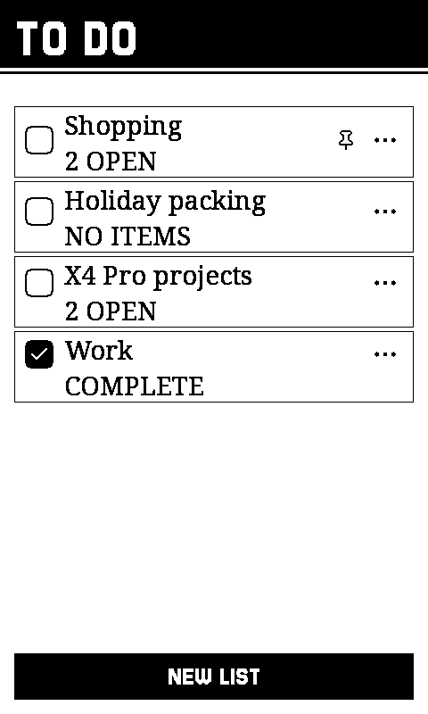

Chess
A full engine on the device, or a board between two of them. Pick up exactly where the position was left.
Xteink X4 Pro · Seeed reTerminal Sticky
So is a chess position, a flashcard, a puzzle you are halfway through. The Xteink X4 Pro and the Seeed reTerminal Sticky are cheap e-ink devices, and CrossPoint already makes them good at reading. CrossPlay is firmware that adds everything else, and lets two of them find each other with nothing to configure.
On each one: Games, then Chess, then Play nearby. They find each other from there.
Click the screen to try it
What a still screen is good at
Reading was never the whole of it.
E-ink holds a page at no power for as long as you need it. So does a chess position, a flashcard, a logic grid, an article you saved to finish. The screen puts up a situation, you think, you decide. A panel that cannot animate is the right one for that, and so far it has been spent on books.
A full engine on the device, or a board between two of them. Pick up exactly where the position was left.

The daily word grid, set in a serif of its own, with an archive of past boards for when today's is done.

A nonogram whose clues are a dungeon. 64 of them, plus a tutorial that is a lesson rather than a level.

A logic grid you can always finish from the clues alone. Every case is built through the solver, so you never have to guess.

Collect duos and bet on the round’s end. Tap any card and it tells you what it does, so nobody has to remember fourteen rules.

Every box shows what it would score before you commit to it. Including the Joker rules, which most versions quietly drop.

Seven columns, one tap each, four in a line to win. The opponent looks seven moves ahead and will not hand you the game.

English draughts, where taking is compulsory. The board marks every piece that can move, so the rule shows itself instead of leaving you tapping men that will not lift.

Hold it against your head, screen out, and everyone else shouts clues. The bottom key is got it, the top key gives up, and the two page keys are the only controls because you cannot see the screen. Seventeen word lists, 2722 of them.
![A revealed TRIVIA question in portrait: a black bar across the top reading TRIVIA on the left and ANSWER on the right, five small difficulty pips below it with the first filled, then the clue set large in a reading serif across four centred lines -- the letter in Hawthorne's The Scarlet Letter was this one, initially standing for the wearer's perceived sin. Under a hairline near the foot sits the answer, a single large A, and along the bottom a wide black NEXT button beside a narrower outlined FLAG.](assets/shots/trivia.png)
Fifty thousand questions off forty-two years of Jeopardy. One goes on the panel and nothing else: read it out, let the table argue, turn it over. Solo play is scored.

One of you sees a hidden number on the strip and says a single clue that sits exactly there. Everyone else argues and moves the marker, then calls which side they missed on. The device lies flat and anyone can touch it, because the board belongs to the table and only the target is secret.

Roll a die, drop it in a column. Matching dice multiply, and every die you place destroys its twins in the column facing it.

Nine by nine, which is the size that finishes on one train journey, or thirteen by thirteen when you have longer. A stone is aimed before it is placed, so the board can warn you before you fill your own eye. Two passes and it counts for you, and you settle which stones are dead by tapping them.

Tap to dig, hold to flag. Your first dig is always safe and always opens a space, because the mines are laid after it.

Four difficulties, and the difficulty is measured rather than guessed: every puzzle is graded by the techniques a human needs to finish it, so Hard is hard for the same reason you would say so.

Fill the cells the row and column clues describe and a picture appears. Every puzzle has exactly one answer and is solvable by reasoning a line at a time, never a guess; a wrong fill locks in as a mistake, the classic rule.

Nine boards of bases joined by paths. Hold the ones that fence a region and it pays you its medals, but every troop has to trace back to your H.Q. Solo or against someone opposite you.

The two-player trading game, against an opponent that only ever sees what you see, or against someone sitting opposite you.

Lay out a fleet, then hunt someone else's. The game PLAY NEARBY was built for, and the reason the layer exists.

A party game for up to eight people and a single device that goes round the table. No second device needed, and no phones.

Klondike, turned sideways because that is the shape of a tableau. Your last sixteen deals are drawn from your own record.

Your own Anki decks with the FSRS scheduler, offline. Reviews you do here go back into Anki afterwards, through the same page that put the deck on the card. Put your deck on it ›

The front page in a reading serif, with articles pulled down and kept on the card so a saved one is still there with the radio off.

The archive packed onto the SD card and drawn one to one, with new strips fetched as they land. A comic is line art, which is exactly what this panel is best at.

Any OPDS catalog, browsed and downloaded on the device with no computer in the middle. Two are set up already: Project Gutenberg, which you browse, and a search-only one that opens straight on the keyboard. Anything else that speaks OPDS is a URL away.

Your unread queue, as text on the card, so it reads with the radio off. Where you got to syncs back, and ARCHIVE puts an article away everywhere. It cannot delete anything: that endpoint is not wired up at all.

Pick any image on the card as the reader's sleep screen. One tap sets it, and a banner keeps the current one in view. Make one from a photo in the browser: turn a picture into a wallpaper ›

Several lists of things to do, each item a box you tap to tick. A list is complete when every item is; finished lists sink to the bottom and pinned ones float to the top. New lists and items are typed on the same keyboard as everything else, a bin takes away the ones you are done with, and the whole thing is one small text file on the card.
Swipe for the rest
Untouched. CrossPlay adds a shelf beside the library and never gets in its way, and every CrossPoint release lands here within the week.

Two devices, one table
It just says play nearby.
Put two of them next to each other and they find one another. There is no pairing screen, no room code, no account, no router and no internet. The entire surface of it is one row on a menu.
They do not have to be the same device. An X4 Pro and a reTerminal Sticky play each other in either direction, which is the pair this was checked on.
The measure for this was the DS: you sat down next to someone and it worked, and nothing about the experience ever mentioned a network. If a person ever has to know how it connects, that is a bug.


Everyone is a face and three words.
A device names itself with three words, and the face beside it is drawn from that name: hair, eyes, mouth, fourteen options apiece. Nothing is stored and nothing is sent. The other device rebuilds your face from the name its radio already carried, so it can never arrive stale, and the person opposite you is Bald rather than a MAC address.
Nine games use it today, from Chess to Battleship to Toy Battle. It is a layer rather than a feature, so the next game gets it for free.
Name
Every face. Tap a word to change one.
Open firmware
Nothing here asks permission.
There is no store between you and the device, no review, no account and no subscription. It is a binary you flash and source you can read.
The reasoning is written down beside it: what this is for for why a screen that holds still is the point rather than a limitation, the design language for what that means on a 1-bit panel and the ink budget that governs it, the two buttons for why there are only two and what that costs, and games at scale for how one gets built and torn apart before it ships.
This runs on real hardware. A person flashed v1.2.1, played most of the shelf, and found three real problems; the fixes shipped in v1.2.2 within the week. Since v1.3.0 there is an X4 Pro on my own desk, joined on 2026-08-25 by a reTerminal Sticky, and releases are flashed to both before they ship. That is still a small record: say what you find, either way. One box, under a minute, no account.
Install it from this page
Plug the device in, wake it, press the button. Chrome or Edge, on a computer.
One thing left.
Your books stay. The SD card is not touched.
When your device talks to CrossPlay's own services it includes an anonymous device id, its version and board, and any crash it just recovered from; nothing else calls home, and Settings → System turns it off.
crossplay-<version>-x4pro-full.bin or crossplay-<version>-sticky-full.bin. Each is the whole firmware, bootloader and partition table included, so you do not need to have installed CrossPoint first. The firmware refuses an image built for the other board, so the worst a mixed-up download costs is a retry.pip install esptool on Windows, macOS or Linux alike. With the device plugged in (shown for the X4 Pro; swap in the sticky filename on a Sticky):
esptool.py --chip esp32s3 --baud 921600 write_flash 0x0 crossplay-<version>-x4pro-full.bin
firmware.bin for the X4 Pro, firmware-sticky.bin for the Sticky -- over Wi-Fi or from the SD card. The -full.bin is for USB only: handing it to the updater writes a bootloader into a slot meant for the application.